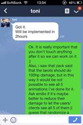
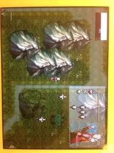
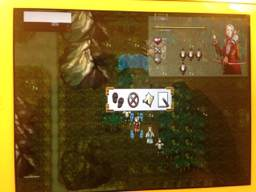
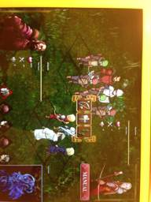
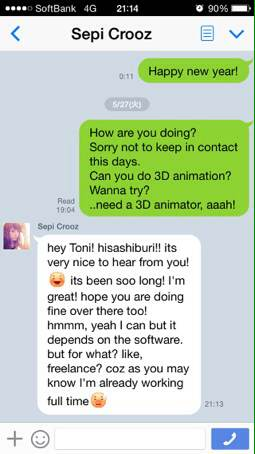
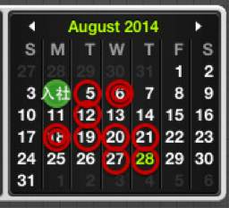

PARTICIPANTS:
DB ID: 0
Current name: You
Address book name: You
User name:
Phone Number:
Key:
DB ID: 513
Current name: ジュゼッペ
Address book name: Giuseppe DICO
User name: ジュゼッペ
Phone Number: 08048752735
Key: 080 4875 2735
Messages:
2014/02/14 19:32:02, "0:You":
Hi there!
R u also going to the office tomorrow ?
2014/02/14 19:36:18, "513:ジュゼッペ":
Hey!
2014/02/14 19:36:47, "513:ジュゼッペ":
Didn't decided yet. I will probably decide tomorrow
2014/02/14 19:40:19, "0:You":
It's freezing cold!
Take care!
2014/02/26 20:28:41, "513:ジュゼッペ":
Turning back now. You're still there?
2014/02/26 20:29:47, "0:You":
Yeah
I can wait
2014/02/26 20:30:44, "513:ジュゼッペ":
Good. Sorry for make you waiting so long
2014/02/26 20:32:52, "513:ジュゼッペ":
Did you remembered to unplug my pc?
2014/02/26 20:32:54, "513:ジュゼッペ":
lol
2014/02/26 20:33:07, "0:You":
Oh! No!
2014/02/26 20:33:31, "0:You":
Now I just did
2014/02/26 20:33:47, "513:ジュゼッペ":
Nooooo
2014/02/26 20:34:00, "513:ジュゼッペ":
Ahahah i'll lose my hard disk one day
2014/02/26 20:34:40, "0:You":
Your PC is very warm now.
2014/02/26 20:35:28, "513:ジュゼッペ":
Can you force it and turn it off? You just have to press the standby button for a while
2014/02/26 20:36:30, "0:You":
Ok
2014/02/28 10:02:14, "513:ジュゼッペ":
I'll arrive at the office by 10:30
2014/02/28 10:08:04, "0:You":
Congrats, have fun!
I'll also get to the office at 10:30
2014/03/15 21:39:15, "513:ジュゼッペ":
Finished with the battle, exporting the package
2014/03/15 21:39:50, "0:You":
tnx!
2014/03/16 15:27:34, "0:You":
One more for Seva's collection
2014/03/16 15:27:41, "0:You":
You sent a photo.
2014/03/16 15:28:18, "513:ジュゼッペ":
Ahahaha looking good!
2014/03/17 02:01:41, "0:You":
Hi
Did you send me the tarot card effects?
2014/03/17 02:02:23, "513:ジュゼッペ":
by wetransfer to you gmail account.
2014/03/17 02:02:46, "513:ジュゼッペ":
I was able to finish the effect sat night
2014/03/17 02:07:22, "0:You":
Got it.
Will be implemented in 2hours
2014/03/17 02:10:38, "513:ジュゼッペ":
Ok. It is really important that you don't touch anything after it so we can work on it ;)
Also, i saw that zack said that the tarots should do 100hp damage, but in this way it would be not possible to see all 5 animations i've done for it. Ask emilio if it's maybe better to reduce their damage to let the users/clients see all 5 of them (i guess that randomize a damage between 20 and 35 should be good enough).
2014/03/17 02:11:24, "0:You":
Currently tarot is 5Hpts
2014/03/17 02:11:29, "513:ジュゼッペ":
In fact, zach didn't saw the animations yet, and he still believe that the tarot animation is the red one
2014/03/17 02:11:54, "513:ジュゼッペ":
Please ask also emilio opinion on this :)
2014/03/17 02:12:16, "0:You":
I'll sent a build now.
Had no stable until now
2014/03/17 02:12:28, "513:ジュゼッペ":
Good!
2014/03/17 13:49:55, "0:You":
Did the last commit 1 hour ago.
Not gonna touch the region map, you're free to change anything you want.
Don't worry about breaking things. I'll be fixing after you.
2014/03/17 13:50:40, "513:ジュゼッペ":
Toni, this is SUPER bad.
2014/03/17 13:51:17, "513:ジュゼッペ":
I said MILION TIMES to don't touch it anymore: we're working on it from 10
2014/03/17 13:51:30, "513:ジュゼッペ":
So, from 4 hours
2014/03/17 13:52:09, "513:ジュゼッペ":
You said that in two hours yesterday night you would do the last commit, and we have the build for ips almost ready
2014/03/17 13:52:19, "513:ジュゼッペ":
Ios
2014/03/17 13:52:49, "0:You":
Is just what you gave me.
The tarot anims are the correct ones?
2014/03/17 13:53:41, "513:ジュゼッペ":
I gave the tarots on saturday - we are now fixing all tasks i spoke with you and emilio by mail
2014/03/17 13:55:12, "513:ジュゼッペ":
Yesterday, this is what we said:
2014/03/17 13:55:13, "0:You":
I had to change so manny other things.
Gotta keep doing what Zagh says.
And he just gave me even more tasks 1 hour ago.
2014/03/17 13:55:26, "513:ジュゼッペ":
Giuseppe DICO sent you a photo.
2014/03/17 13:55:56, "513:ジュゼッペ":
You could tell to speak with me. Or you could have speak with me.
2014/03/17 13:56:30, "513:ジュゼッペ":
We were working untill 4 yesterday night and from 10 today
2014/03/17 13:57:08, "513:ジュゼッペ":
No hard feelings but we're not going to trash all of this.
2014/03/17 13:58:10, "513:ジュゼッペ":
Please say to zach to speak with me about this: you're just super stressed and it's not your fault
2014/03/17 13:58:37, "0:You":
Ok.
Overwrite mine.
Sorry for that.
2014/03/17 16:23:10, "0:You":
There's a little problem with font size
2014/03/17 16:23:28, "0:You":
You sent a photo.
2014/03/17 16:32:00, "0:You":
You sent a photo.
2014/03/17 16:32:30, "0:You":
You sent a photo.
2014/03/17 16:35:14, "0:You":
You sent a photo.
2014/03/17 16:35:40, "0:You":
You sent a photo.
2014/03/17 22:40:05, "0:You":
I just committed the rest of region maps.
2014/03/17 22:43:45, "0:You":
Can you guys upload the latest build to Testflight?
2014/03/17 22:45:23, "513:ジュゼッペ":
Hi, seva is off now. Thanks for the upload! I'll try to reach him and see if he can do it, i hope that in less than 1hour we'll upload it
2014/04/04 20:02:43, "0:You":
You sent a photo.
2014/04/04 20:03:40, "0:You":
You sent a photo.
2014/04/04 20:08:32, "513:ジュゼッペ":
Holy shit
2014/04/11 22:58:01, "513:ジュゼッペ":
デートはどう？
2014/04/11 22:58:54, "0:You":
You sent a photo.
2014/04/11 22:59:09, "0:You":
そっちは？
2014/04/11 23:20:58, "0:You":
今ラブホ？
2014/04/12 00:53:33, "513:ジュゼッペ":
うちだよー
2014/04/12 00:55:40, "0:You":
そうだね！
家が一番安いね！
2014/04/12 01:46:42, "513:ジュゼッペ":
でもさー
2014/04/12 01:47:12, "513:ジュゼッペ":
前におごるのは「嫌だ」なー
2014/04/12 01:47:28, "513:ジュゼッペ":
3万だったしねー
2014/04/12 01:48:15, "0:You":
3万の価値観があった？
2014/04/12 01:48:30, "513:ジュゼッペ":
いいえ
2014/04/12 01:48:54, "513:ジュゼッペ":
僕もお酒好きだけだから
2014/04/12 01:48:59, "513:ジュゼッペ":
しょうがないわ
2014/04/12 01:50:08, "513:ジュゼッペ":
そっちはどうだった？
2014/04/12 01:51:40, "0:You":
ヤバイよ！
2014/04/12 03:14:42, "513:ジュゼッペ":
こっちはなんか分からない
2014/04/12 13:58:06, "0:You":
La Donna e mobile su il beto stabile!
2014/04/22 23:05:36, "513:ジュゼッペ":
Tried to search for the 2 udids but no results: are they already registered?
2014/04/22 23:22:30, "0:You":
They are registered at the iPhone developers web with the Nakatsukas profile.
2014/04/22 23:24:29, "0:You":
They probably need to access from the iPads to the Testflight URL to complete the registration
2014/04/22 23:25:56, "513:ジュゼッペ":
I resent them the invitation through testflight though
2014/04/22 23:26:06, "513:ジュゼッペ":
This should solve everything
2014/04/24 18:57:46, "0:You":
https://email19.asia.secureserver.net/webmail.php?login=1
2014/04/28 20:16:00, "0:You":
やきとり
http://tabelog.com/tokyo/A1321/A132101/13162306/
2014/04/28 20:42:37, "0:You":
困った！
満席だ！
2014/04/28 20:51:19, "0:You":
とにかく、駅前で待ってるよ。
…中井駅
違う焼き鳥あった
2014/04/28 20:58:44, "513:ジュゼッペ":
いいえいえ
2014/04/28 20:59:03, "513:ジュゼッペ":
椎名町でシンプルな所がって
2014/04/28 20:59:07, "513:ジュゼッペ":
そっちに行こう
2014/04/28 20:59:11, "513:ジュゼッペ":
今どこ？
2014/04/28 20:59:26, "513:ジュゼッペ":
俺は駅前
2014/04/28 20:59:55, "0:You":
何の駅？
2014/04/28 21:00:16, "0:You":
中井駅？
2014/04/28 21:00:36, "513:ジュゼッペ":
椎名町だよ
2014/04/28 21:00:47, "513:ジュゼッペ":
中井遠いっす
2014/04/28 21:01:33, "513:ジュゼッペ":
歩も体調悪くても参加したいので
2014/04/28 21:01:50, "513:ジュゼッペ":
あまり移動したら悪いのかなとは思った
2014/04/28 21:02:06, "0:You":
先に飲んで
2014/04/28 21:03:04, "513:ジュゼッペ":
くるの？
2014/04/28 21:03:15, "513:ジュゼッペ":
中塚さんも参加するかも
2014/04/28 21:03:42, "0:You":
いいね
今向かってる
2014/04/28 21:03:56, "513:ジュゼッペ":
場所送る
2014/04/28 21:06:16, "513:ジュゼッペ":
一家、ファミマの前ぐらい
2014/04/28 21:06:16, "513:ジュゼッペ":
にいるよ
2014/04/28 21:06:16, "513:ジュゼッペ":
Giuseppe DICO sent you a photo.
2014/04/28 21:15:30, "513:ジュゼッペ":
まだ？
2014/04/28 21:16:32, "0:You":
あと、ちょい
2014/05/11 22:15:10, "513:ジュゼッペ":
明日、西新宿で9:45でいいの？
2014/05/11 22:15:33, "0:You":
None
2014/05/12 09:33:27, "0:You":
着いた
2014/05/12 09:40:29, "513:ジュゼッペ":
僕は後10分、丸の内で到着する。どこの出口で合えばいい？
2014/05/12 09:40:41, "513:ジュゼッペ":
会えば
2014/05/12 09:42:26, "0:You":
C10.
東京医大病院前出口
2014/05/12 09:50:19, "513:ジュゼッペ":
他の出口に出たようです。スパイシーの前で会おう
2014/05/12 09:50:58, "513:ジュゼッペ":
住所わかる？
2014/05/14 19:27:58, "0:You":
Can we send the sourcecode to Spicysoft?
Is there any issues if we send it?
2014/05/14 19:31:48, "513:ジュゼッペ":
Ask emilio
2014/05/15 21:17:00, "513:ジュゼッペ":
お疲れ様です
ビルドありがとうございます！
2014/05/20 15:08:55, "0:You":
https://itunes.apple.com/jp/app/line-wind-runner/id596677152?l=en&mt=8
2014/05/20 15:09:21, "0:You":
https://itunes.apple.com/jp/app/line-ninja-strikers/id595548779?l=en&mt=8
2014/05/21 02:22:12, "513:ジュゼッペ":
Giuseppe DICO sent you a photo.
2014/05/21 04:51:42, "513:ジュゼッペ":
サーバーからどうやってdicoメールに入れます？他のパソコンから入りたいです。
2014/05/22 09:54:51, "513:ジュゼッペ":
今日は1時間の遅刻する、ごめん
2014/05/22 09:55:24, "0:You":
np
2014/05/23 10:25:51, "513:ジュゼッペ":
In a skype meeting with italian designer
2014/05/23 10:25:59, "513:ジュゼッペ":
Will come in 15 mins
2014/05/27 09:36:57, "0:You":
Skype is unusable
Can you skype for me that I'll be 15min late?
2014/05/27 09:50:03, "513:ジュゼッペ":
K
2014/05/27 21:15:16, "0:You":
Got it!
2014/05/27 21:15:24, "0:You":
You sent a photo.
2014/05/27 21:17:12, "0:You":
Now you like her, eh?!
2014/05/27 21:18:30, "513:ジュゼッペ":
Ahahah give me her contact lol
2014/05/28 17:19:58, "513:ジュゼッペ":
Giuseppe DICO sent you a photo.

2014/05/30 19:36:26, "513:ジュゼッペ":
toni, asap send to seva by mail (firestorage or whatever you please) the code of itotooshi. His mail is satsuoni@hotmail.com
2014/05/30 19:36:29, "513:ジュゼッペ":
thanks
2014/05/30 19:37:00, "0:You":
Sent it to chatwork
1 hour ago
2014/05/30 19:37:20, "513:ジュゼッペ":
he's not there - I will send it to him ok
2014/05/30 19:37:35, "0:You":
Tnx for the help
2014/06/01 11:22:49, "513:ジュゼッペ":
need itotoushi smth. Zip for Seva or else he can not work on it
2014/06/01 11:27:13, "0:You":
https://www.chatwork.com/#!rid19246193-313464560
2014/06/01 11:28:16, "513:ジュゼッペ":
thanks
2014/06/01 11:29:21, "513:ジュゼッペ":
but it seems that is the wrong file.
2014/06/01 11:29:33, "513:ジュゼッペ":
or he's just complaining about it
2014/06/01 11:29:44, "513:ジュゼッペ":
did you talked about it at the bbq?
2014/06/01 11:34:55, "0:You":
the code?!
is the latest, and very clean and documented.
the only parts that are bottlenecks are the ones he impemented:
die animatinons, banners, sound effects.
2014/06/01 11:35:20, "513:ジュゼッペ":
or probably he's just confused
2014/06/01 11:35:29, "513:ジュゼッペ":
I'll try to call him
2014/06/05 19:39:32, "513:ジュゼッペ":
Just to let you know: I was told to don't invite Naito at events before asking to Emilio if it's not necessary because she's working too hard, apparently. Please keep that in mind next time ;)
2014/06/05 19:39:57, "0:You":
None
2014/06/11 11:15:25, "513:ジュゼッペ":
Super late
2014/06/11 11:15:39, "513:ジュゼッペ":
Is there nakatsuka or emilio?
2014/06/11 11:15:57, "513:ジュゼッペ":
woke up like 20 mins ago
2014/06/11 11:16:00, "513:ジュゼッペ":
Coming
2014/06/11 11:16:44, "0:You":
nakatsuka is not comming
emilio will get here at 13
if you come ~13h, you're safe
2014/06/11 11:17:32, "513:ジュゼッペ":
I knew but just to be sure. Drank too much yesterday
2014/06/11 11:17:45, "513:ジュゼッペ":
See you in a few
2014/06/11 11:18:01, "0:You":
see ya!
2014/06/12 21:55:56, "0:You":
You sent a photo.
2014/06/12 23:53:49, "513:ジュゼッペ":
The best is yet to come
2014/06/28 15:34:01, "0:You":
I'm a dad, it's almost official.
2014/06/28 15:34:11, "0:You":
You sent a photo.
2014/06/28 15:34:47, "0:You":
They told me that the black point in the middle is a baby
2014/06/28 16:03:48, "513:ジュゼッペ":
Congratulations.
You don't have to choose anymore, destiny have chosen for you.
2014/06/28 19:12:53, "513:ジュゼッペ":
(If you want to go out for a drink it's ok for me)
2014/07/02 11:10:18, "513:ジュゼッペ":
2014/07/02 11:10:54, "513:ジュゼッペ":
2014/07/02 20:17:50, "0:You":
got the TOP page boxes done
2014/07/02 23:38:43, "513:ジュゼッペ":
Good
2014/07/07 22:49:52, "0:You":
Just breakers up with her.
2014/07/08 00:17:19, "513:ジュゼッペ":
Thought that. Well, it was like mandatory right?
2014/07/08 00:17:40, "513:ジュゼッペ":
2014/07/08 00:19:03, "0:You":
1 more break up, and I'll be ready to marry.
They've been too manny break ups this days.
2014/07/08 00:19:43, "513:ジュゼッペ":
Next one is fujina?
2014/07/08 00:20:04, "0:You":
Yes. Tomorrow.
2014/07/17 20:21:29, "0:You":
I'm on the red gate
2014/07/17 20:23:08, "513:ジュゼッペ":
It will take other 5/7 mins to me (gone home changing clothes)
2014/07/17 20:23:17, "513:ジュゼッペ":
Make some good pictires
2014/07/17 20:23:22, "513:ジュゼッペ":
Pictures
2014/07/17 20:23:55, "0:You":
You sent a photo.
2014/07/17 20:24:04, "0:You":
Nothing to see here
2014/07/18 16:37:05, "513:ジュゼッペ":
Favor to ask
2014/07/18 16:37:15, "513:ジュゼッペ":
Can you please look in to the meishi holder
2014/07/18 16:37:26, "513:ジュゼッペ":
With just few meishi
2014/07/18 16:37:50, "513:ジュゼッペ":
And write me the name pf the dmm guy?
2014/07/18 16:39:41, "0:You":
Kazuhiko Sakamoto
2014/07/18 16:40:00, "513:ジュゼッペ":
Thanks
2014/07/18 16:40:47, "0:You":
You sent a photo.
2014/07/18 16:41:13, "513:ジュゼッペ":
Thanks man
2014/07/23 10:47:51, "0:You":
Seva wants to eat cheese, Cream cheese.
2014/07/23 11:05:35, "513:ジュゼッペ":
Feed him. Just went out from hospital
2014/07/23 11:05:43, "513:ジュゼッペ":
Will be there in 30 mins
2014/07/23 11:05:48, "513:ジュゼッペ":
Maybe 1 hour
2014/07/23 11:08:37, "0:You":
Who did you get pregnant this time?
2014/07/23 11:12:19, "513:ジュゼッペ":
You'll never imagine
2014/07/23 11:12:26, "513:ジュゼッペ":
2014/08/01 10:28:47, "513:ジュゼッペ":
Coming!
2014/08/01 10:29:32, "0:You":
no rush
VIPs not here
2014/08/19 18:35:27, "0:You":
r you alive?
Did they kick you out of Japan?
2014/08/19 18:48:29, "513:ジュゼッペ":
I wasted all day in shinjuku's and toshima's kuyakusho. Hadn't changed my address when i moved in january and is tooking forever
2014/08/26 18:51:14, "0:You":
Hello
2014/08/26 18:51:26, "0:You":
Hi
2014/08/26 18:52:05, "0:You":
ユニクロ
2014/08/26 18:52:18, "0:You":
Dico
2014/08/28 10:38:38, "0:You":
nobody at the office yet.
guys, r you alive?
2014/08/28 10:40:35, "513:ジュゼッペ":
Takara tomi
2014/08/28 10:40:38, "513:ジュゼッペ":
Mtg
2014/08/28 10:42:31, "0:You":
OK, just told Nakatsuka that's everything is OK.
men!
air is so dense here.
Tsuihiji is late again.
2014/08/28 10:43:45, "0:You":
not a good timming to come late to the office.
If you have his messenger/LINE tell him to run.
2014/08/28 10:50:03, "513:ジュゼッペ":
⁇
I'm at takara tomi and the meeting will start at 11
2014/08/28 10:50:17, "513:ジュゼッペ":
I am perfectly on time
2014/08/28 10:50:35, "513:ジュゼッペ":
2014/08/28 10:50:57, "513:ジュゼッペ":
Why the air is dense? Feeling alone?
2014/08/28 10:51:00, "0:You":
we know that. Nakatsuka also knows.
I'm worried about Tsuihiri.
2014/08/28 10:51:56, "513:ジュゼッペ":
He's lazy as fuck and he's probably getting double the money that i get
2014/08/28 10:53:29, "513:ジュゼッペ":
Not a good start for him in the company
2014/08/28 10:53:56, "513:ジュゼッペ":
Don't have his line tho
2014/08/28 12:29:02, "513:ジュゼッペ":
Did he show up?
2014/08/28 12:36:35, "0:You":
nope
he sent a Skype, thow
On 8/28/14, at 11:18 AM, 築比地 聡(ついひじ) wrote:
> 体調が優れず横になっていて連絡が遅くなりました。
> 13:30頃に出社します。
> ご連絡が遅くなってしまい、申し訳ございません。
2014/08/28 13:01:41, "513:ジュゼッペ":
Ahahah poor guy
2014/08/28 13:02:01, "513:ジュゼッペ":
Turning back now after lunch
2014/08/28 13:16:39, "0:You":
You sent a photo.
2014/08/28 13:17:23, "0:You":
kick read of the 勤怠連絡 channel gave me this
2014/08/28 13:20:44, "0:You":
I'll ask Emilio if this guy is really good.
'cause seems to me that he's planning to go to leave us and go to a bigger companny.
2014/08/28 13:35:32, "513:ジュゼッペ":
Same impression here
2014/08/28 13:35:42, "513:ジュゼッペ":
He's going to some mensetsu
2014/08/28 13:47:34, "513:ジュゼッペ":
Mujeres
2014/08/28 13:47:48, "513:ジュゼッペ":
I m there in 3 mins
2014/08/28 13:47:53, "513:ジュゼッペ":
Coffe?
2014/08/28 13:48:04, "513:ジュゼッペ":
LOL
2014/08/28 21:29:17, "513:ジュゼッペ":
Spoke with nakatsuka about tsuhiji.
It doesn't have nothing special (no special contracts nor anything else) to justify his delays and day off from the office.
Anyway, he told me to not worry about him too much.
Anyway, since he's the director and today he clearly said the ninja project it's without any interesting point, i suggest to you to stop the development tomorrow and ask emilio what to do - since as you probably know i can't change the original concept to please him.
2014/08/28 21:32:54, "0:You":
OK
whatever you guys decide.
But it's gonna be very difficult to tell Hoshino that his project is not interesting anymore.
2014/08/28 21:38:05, "513:ジュゼッペ":
It's in emilio's decision if the project is going on or no.
After today, however, i guess i leave the project management if tsuhiji is involved - i just dislike the way he spoke to me today without knowin anything about the situation.
2014/08/28 21:41:04, "513:ジュゼッペ":
This has nothing to do about you or our communications. He was just a total coward saying nothing during the mtg with hoshino and then saying that "my game" (wait, you're not supposed to be the director here?) is not well thought and it's all my responsability.
Fuck it. I m out of the project and i'm really sorry but who cares - no time to waste on people like that.
2014/08/28 21:57:27, "0:You":
We've been handling this project wrong.
We could brainstorm, add features.
I wanna make it worth, that's why I'm adding lots of details, like the sense of depth in the camera and the ninja waiting in the station for you to start.
I would love to hear more features from you.
To strip the game to the bones just because "we've not been told to make the feature" is not good.
2014/08/28 21:59:55, "0:You":
Btw, if Tuihiji is the Director/Responsable somebody should have told us.
2014/08/28 22:01:10, "0:You":
Tsuihiji only had 1 mtg, he doesn't know enough yet to lead
2014/08/29 05:06:55, "513:ジュゼッペ":
It does not matter. Instead of playing candy crush (when he is in the office and not sleeping at home) all day he could have read all the documentation that was shared from the first day.
2014/08/29 05:11:45, "513:ジュゼッペ":
Dico is his 11th company, i start to understand why he changed so many workplaces.
For what it concerns the game, before adding feature the system have to work better, with all the basic improved I guess.
I still think the camera should stay still for the entire game from the start.
Same point of view for all the lenght of it.
Ninja's waiting is a cute gimmick, of course.
2014/08/29 07:49:12, "0:You":
Need to know what is it "basic" to you.
'cause for me the "basic" is there already.
There's nothing else to do with the game engine, don't understand why ain't we implementing animations and modeling cities.
2014/08/29 08:04:29, "0:You":
Tsuihiji might quit soon, if not getting fired.
Still he can help in brainstorming.The more people, the better the results are
2014/08/29 15:06:04, "513:ジュゼッペ":
Emilio and Tsuhiji talked about inserting an external game designer to write shiyousho for the stylish game, so for now just stop the dev on it untill you get new documents.
2014/08/29 15:06:22, "513:ジュゼッペ":
right now, what are you writing? the letters one?
2014/08/29 15:07:02, "0:You":
I'm developping a PlayGie for DICO
2014/08/29 15:07:37, "513:ジュゼッペ":
ok, please write a simple doc where you explain what we can do for it - english is good as well japanese.
2014/08/29 15:07:40, "513:ジュゼッペ":
2014/08/29 15:08:01, "0:You":
Planet of Apes?!
2014/08/29 15:08:21, "513:ジュゼッペ":
yess
2014/09/01 13:01:43, "0:You":
morning!
did you have lunch already?
2014/09/03 22:00:22, "513:ジュゼッペ":
Hey
2014/09/03 22:00:38, "513:ジュゼッペ":
You forgot the pass for the event of tomorrow
2014/09/03 22:00:56, "513:ジュゼッペ":
You had to pass it to tsuhiji or emilio lol
2014/09/03 22:01:11, "513:ジュゼッペ":
How can you pass it to me tmrw?
2014/09/03 22:01:49, "0:You":
Are you close to Shinjuku?
2014/09/03 22:02:22, "513:ジュゼッペ":
Nope still in yokohama
2014/09/03 22:02:38, "513:ジュゼッペ":
Will be in shibuya in half an hour and in baba in 40
2014/09/03 22:03:09, "513:ジュゼッペ":
Do you have a bike?
2014/09/03 22:03:23, "513:ジュゼッペ":
If so you can come to baba in 10 mins
2014/09/03 22:03:50, "513:ジュゼッペ":
If not we have to meet tmrw morning somewhere
2014/09/03 22:05:30, "0:You":
bike
Can meet inside the baba Stn
2014/09/03 22:06:36, "513:ジュゼッペ":
Cool
2014/09/03 22:06:55, "513:ジュゼッペ":
Half an hour from now baba stn?
2014/09/03 22:07:16, "0:You":
22:40
Ok
2014/09/03 22:08:35, "513:ジュゼッペ":
K
Baba station's waseda exit in the center of the square
2014/09/03 22:08:48, "513:ジュゼッペ":
Ill wait you tere
2014/09/03 22:08:49, "513:ジュゼッペ":
Tere
2014/09/03 22:09:00, "513:ジュゼッペ":
There lol touch keyboards
2014/09/03 22:10:36, "0:You":
I'll give you a call.
I might get the ride for free if I get back to Shinjuku fast enough
2014/09/03 22:11:29, "513:ジュゼッペ":
Or you can use a taxi and give the invoice to nakatsuka. He will give you the money back
2014/09/03 22:11:52, "513:ジュゼッペ":
I'll text you when i'm in shibuya
2014/09/03 22:12:06, "0:You":
2014/09/03 22:12:19, "0:You":
Heading for baba now
2014/09/03 22:17:44, "513:ジュゼッペ":
Will be in baba at 11
2014/09/03 22:18:02, "513:ジュゼッペ":
I'm on a local train
2014/09/03 22:42:19, "0:You":
Just got here
I'll be waiting at the home
2014/09/03 22:56:38, "513:ジュゼッペ":
You're inside the station?
2014/09/03 22:56:44, "513:ジュゼッペ":
Wich platform?
2014/09/03 22:56:57, "0:You":
1&2
2014/09/03 22:57:16, "513:ジュゼッペ":
Good
2014/09/03 22:57:28, "513:ジュゼッペ":
At the entrance?
2014/09/03 22:58:21, "0:You":
Yes
2014/09/03 22:59:40, "0:You":
Next to the escalator
2014/09/03 23:00:07, "513:ジュゼッペ":
Next to waseda exit then
2014/09/03 23:00:12, "513:ジュゼッペ":
Ok wait me there
2014/09/03 23:00:32, "0:You":
Ok
2014/09/04 10:05:32, "513:ジュゼッペ":
Hey, have a minute?
2014/09/04 10:06:01, "0:You":
Sure
2014/09/04 10:07:19, "513:ジュゼッペ":
It's about the kddi web page.
Yesterday i was talking with izumi an ayumu about it.
I think it's a brainless work to develop 2 page for an app for smartpass but
2014/09/04 10:07:51, "513:ジュゼッペ":
They are really concerned about it.
The rules are impressivily long and difficult to read
2014/09/04 10:08:26, "513:ジュゼッペ":
What i ask you is: before tomorrow's meeting, can you check all documentation?
2014/09/04 10:09:06, "0:You":
Ok
I'll take a look
2014/09/04 10:10:22, "513:ジュゼッペ":
It's huge and it contains a lot of law terms so it's nothing easy to read.
The client itself said that it is a really difficult job.
I just think that they are worring too much but it's better to don't leave this to ayumu only. She doesn't know anything and she is really scared
2014/09/04 10:11:03, "513:ジュゼッペ":
Also, emilio seemed too harsh yesterday with her
2014/09/04 10:12:39, "513:ジュゼッペ":
Ask her the documents by yourself, this will let her understand that you care about this small project
2014/09/04 10:12:44, "513:ジュゼッペ":
2014/09/04 10:13:52, "0:You":
no worries
2014/09/04 10:14:06, "513:ジュゼッペ":
2014/09/05 15:26:37, "0:You":
15:56に北千住に着きます
--- from 駅すぱあと ---
2014/09/05 23:33:12, "513:ジュゼッペ":
May try to get my self into the joshikai of naito lol
2014/09/05 23:33:27, "513:ジュゼッペ":
Still undecided
2014/09/05 23:33:32, "0:You":
Go for it!
2014/09/05 23:33:40, "513:ジュゼッペ":
Hahahaha
2014/09/05 23:33:53, "513:ジュゼッペ":
She would hate me
2014/09/05 23:34:54, "513:ジュゼッペ":
Guess she's out with some good milf tho
2014/09/05 23:34:58, "0:You":
She loves us.
Go and ask the girl to check your teeth.
2014/09/05 23:35:06, "513:ジュゼッペ":
Hahahahahah
2014/09/05 23:35:10, "513:ジュゼッペ":
Ill do it!
2014/09/05 23:35:34, "0:You":
Yeah!
That's the spirit!
2014/09/09 10:16:44, "513:ジュゼッペ":
Hey, am a bit late
2014/09/09 10:16:57, "513:ジュゼッペ":
Will come at 10:40
2014/09/09 10:17:20, "513:ジュゼッペ":
Skype doesn't seems to work well from my phone
2014/09/09 10:17:38, "0:You":
okなかつかis already here
2014/09/19 19:02:47, "513:ジュゼッペ":
In shibuya in a bit
2014/09/19 19:04:13, "0:You":
Just got here
2014/09/19 19:05:29, "513:ジュゼッペ":
At the cafe?
2014/09/19 19:05:33, "513:ジュゼッペ":
Or station?
2014/09/19 19:08:10, "0:You":
Cafe
2014/09/19 19:12:47, "513:ジュゼッペ":
Ah ok was waiting for you here. Smoke in hachiko and ill come
2014/09/19 19:15:18, "0:You":
Wait
I'm in station
2014/09/20 13:56:51, "513:ジュゼッペ":
Boy or Girl?
2014/09/20 15:38:36, "0:You":
Baby girl
2014/10/01 12:42:24, "513:ジュゼッペ":
What time you will be back? we're deciding if wait for you or not to go to lunch
2014/10/01 13:35:32, "0:You":
In 30min.
Already had lunch
2014/10/08 15:01:44, "513:ジュゼッペ":
2014/10/08 15:05:35, "0:You":
プルプルプル？
no!
"Ninja Conga" is better name
2014/10/08 15:08:07, "513:ジュゼッペ":
2014/10/08 15:09:20, "0:You":
None
2014/10/08 15:09:44, "513:ジュゼッペ":
2014/10/08 15:10:01, "0:You":
None
2014/10/09 13:20:52, "0:You":
zmapp
http://www.elsemanaldigital.com/noruega-ridiculiza-a-espana-al-recibir-el-zmapp-que-se-le-nego-a-ana-mato-por-137857.htm
2014/10/10 10:30:35, "513:ジュゼッペ":
中塚's there?
2014/10/10 10:46:08, "0:You":
not yet
2014/10/10 12:11:40, "0:You":
https://www.facebook.com/events/326784440825678/
2014/10/10 12:27:15, "0:You":
▼Onitsuka Tiger × ANDREA POMPILIO 2015SS COLLECTION PARTY
この度、Onitsuka Tiger × ANDREA POMPILIO 15SS COLLECTION RUNWAY
開催同日にパーティーを開催することとなりました。
是非ご来場下さいませ。
■日 程：2014 年10月17日(金)
■時 間：21:30～24:00
■場 所：IDOL 青山（東京都港区南青山5-11-9 レキシントン青山ビル B1F）
DJ’s : Kazuma Takahashi / ASHRA ( IRMA records / SUB TRAX ) Art live performance : Yukino Ohmura
■インビテーション http://www.hpfrance.com/Release/140920_OTXAPSS15PARTYINVITE-3.pdf
*ご来場の際は、上記インビテーションのご提示をお願い致します。
● PRESS CONTACT：PR01. 大橋/川口/伊藤（03-5774-1408）
▼WUT presents JULIAN ZIGERLI Talk Show
世界各地の革新的なブランドをセレクトしたショップ「WUT」が、10月12日（日）表参道「WUT」地下にて、
スイスの注目のブランド「JULIAN ZIGERLI（ジュリアン・ジゲルリ）」のデザイナーJULIAN ZIGERLI氏を迎え、
トークショー＆レセプションパーティーを開催いたします。
デザイナーが作成した2014-15AWシーズンのビデオプロモーションが世界初お披露目となりますので、
皆様ぜひお越しください。
【WUT presents JULIAN ZIGERLI】
■日 程：2014年10月12日（日）
・JULIAN & YANN TALK SHOW
■時 間： 18:00～18:30
■場 所：THE BASEMENT（渋谷区神宮前5-1-15 B1F）
・RECEPTION PARTY
■時 間：17:00～20:00
■場 所：WUT（渋谷区神宮前5-1-15 1F）
2014/10/23 12:42:02, "0:You":
Kawajiri and me are heading to the おいしい中華。
Wanna join?
2014/10/23 12:42:09, "513:ジュゼッペ":
ランチに行った？
2014/10/23 12:42:15, "513:ジュゼッペ":
OK
2014/10/23 12:42:27, "513:ジュゼッペ":
let me ask naito what time she come
2014/10/23 12:42:27, "0:You":
Shall I order for you?
2014/10/23 12:42:43, "513:ジュゼッペ":
No worries
2014/10/23 12:43:06, "513:ジュゼッペ":
Have to send a couple of mail. When you gone out I was in the 1f toilet
2014/10/23 12:43:07, "513:ジュゼッペ":
lol
2014/10/23 12:58:02, "513:ジュゼッペ":
Coming with naito
2014/10/23 12:58:36, "0:You":
2014/11/01 11:52:24, "0:You":
Tsuijiji slepping at my right…
And Michael sleeping at my left.
Too bad.
2014/11/01 12:12:48, "513:ジュゼッペ":
Ahahahahaha
2014/11/01 12:12:53, "513:ジュゼッペ":
2014/11/08 12:12:59, "0:You":
You sent a photo.
2014/11/08 12:13:17, "0:You":
このまま恵比寿に持ってていい？
2014/11/08 12:31:09, "513:ジュゼッペ":
イエッス
2014/11/08 12:31:12, "513:ジュゼッペ":
2014/11/20 11:31:18, "513:ジュゼッペ":
寝坊しちゃった
2014/11/20 11:31:32, "513:ジュゼッペ":
後10分着きますね
2014/11/20 11:31:49, "513:ジュゼッペ":
中塚は下に来た？
2014/11/20 11:32:05, "0:You":
大丈夫だよ
3Fには来てない
2014/11/20 11:32:12, "0:You":
ばれない
2014/11/20 11:32:28, "513:ジュゼッペ":
今日はやばいわ
2014/11/20 11:32:36, "513:ジュゼッペ":
全く起きれなかった
2014/11/20 11:33:15, "0:You":
二日よいか？
いいナースを見つけた？
2014/11/20 11:36:44, "513:ジュゼッペ":
いいえいいえ、スペイン料理のせいだ。ガーリックは消化しにくいよ
2014/11/20 11:37:12, "0:You":
またスペイン人にやられた。
2014/11/20 11:37:45, "513:ジュゼッペ":
しょうがねーなー
2014/12/01 14:34:51, "513:ジュゼッペ":
Toni, big line at the bank, isn't it?
2014/12/01 14:37:06, "0:You":
too much papers
2014/12/01 14:38:45, "513:ジュゼッペ":
lol
don't know if you really were at the bank all time but next time I'll may be not able to cover you for all this time. Nakatsuka came twice here and I said you were at the bank the second time
2014/12/01 14:47:07, "0:You":
men!
2014/12/01 14:47:14, "0:You":
this time, I was in the bank
2014/12/01 14:47:23, "513:ジュゼッペ":
lol
2014/12/01 14:48:02, "513:ジュゼッペ":
you told nakatsuka? it may be better if he knows. No this time but you know
2014/12/01 14:48:19, "513:ジュゼッペ":
maybe I am worring too much
2014/12/01 14:48:42, "513:ジュゼッペ":
just cause he made a face like "3rd floor everybody do whatever they wants"
2014/12/01 14:48:49, "0:You":
I should have told him beforehand.
2014/12/01 14:49:04, "513:ジュゼッペ":
no worries
2014/12/01 14:49:06, "513:ジュゼッペ":
lol
2014/12/01 23:21:03, "513:ジュゼッペ":
どうだった？
2014/12/02 09:19:53, "0:You":
浮気の夜におばあちゃんが死んだらしい。
うまく行かない、ね！
2014/12/02 09:20:16, "513:ジュゼッペ":
最低
2014/12/02 09:20:44, "513:ジュゼッペ":
許されるにはかなり頑張らなくちゃ
2014/12/02 09:36:48, "0:You":
You sent a photo.
2014/12/02 09:37:06, "0:You":
オフィスがきれい
2014/12/02 09:37:43, "513:ジュゼッペ":
だって、昨日皆頑張ったよ
2014/12/02 09:41:28, "0:You":
おつかれ
2014/12/02 14:41:41, "513:ジュゼッペ":
I guess we have line in the kombini too today.
2014/12/02 14:42:30, "513:ジュゼッペ":
Please try to don't overdo it
2014/12/02 14:53:47, "0:You":
Sorry!
Lines...
2014/12/02 14:54:27, "0:You":
I'll be in 1min
2014/12/02 14:54:44, "513:ジュゼッペ":
ahahah well ok
2014/12/30 09:56:39, "513:ジュゼッペ":
At shibuya now, but will be some minutes late. Are you there already? If yes, could you do the time card check for me?
2014/12/30 09:57:06, "513:ジュゼッペ":
Well, if nobody's watching of course
2014/12/30 09:57:10, "513:ジュゼッペ":
2014/12/30 10:01:37, "0:You":
Gotit!